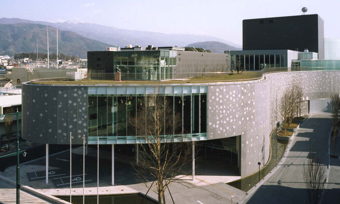
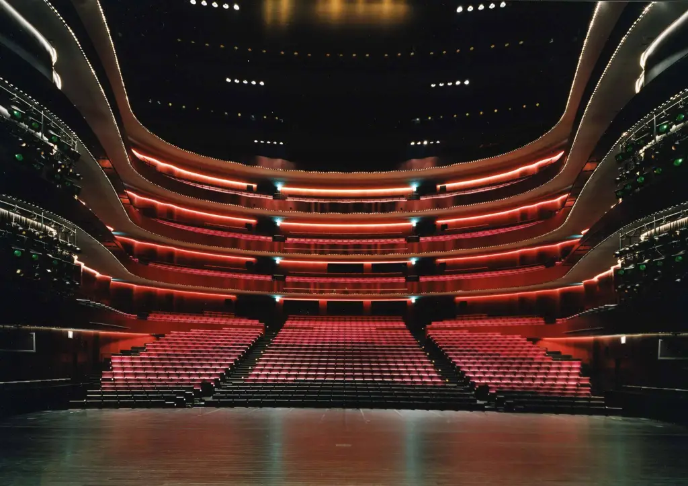

Matsumoto performing arts centre
Le centre des arts Matsumoto est un centre culturel situé à Matsumoto, au Japon. Il a été conçu par l’architecte japonais Toyō Ito et inauguré en 2004 pour accueillir les performances artistiques de tous les types, qu’elles soient traditionnelles ou contemporaines. Il dispose de trois salles principales : la Grande salle, une salle convertible pouvant accueillir 750 à 1800 spectateurs ; la Petite salle avec 288 places ; et le Théâtre expérimental, avec 360 places.
Le centre des arts Matsumoto est non seulement équipé pour servir de lieu de spectacle de pointe, mais il est également adapté pour différents types d’événements, tels que les conférences et les conventions. En tant que nouveau pôle culturel à Matsumoto, il offre la possibilité d’apprécier une diversité d’arts du spectacle, tout en soutenant les activités culturelles et artistiques locales et en facilitant le dialogue, l’échange et la richesse culturelle dans la communauté.
Le centre des arts Matsumoto accueille promeut également les arts du spectacle locaux et les compagnies de théâtre. Il organise régulièrement des événements spéciaux, tels que des concerts, des spectacles et des manifestations publiques. Le centre des arts Matsumoto est un symbole du développement culturel et artistique de Matsumoto, ainsi qu’un exemple d’architecture innovante et écologique.